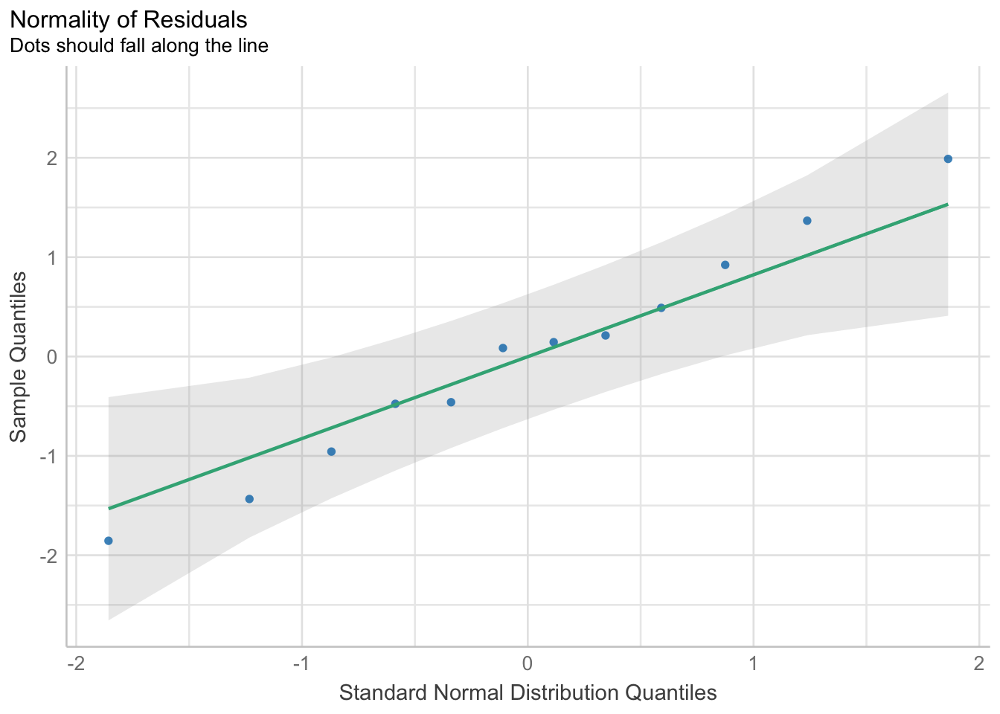
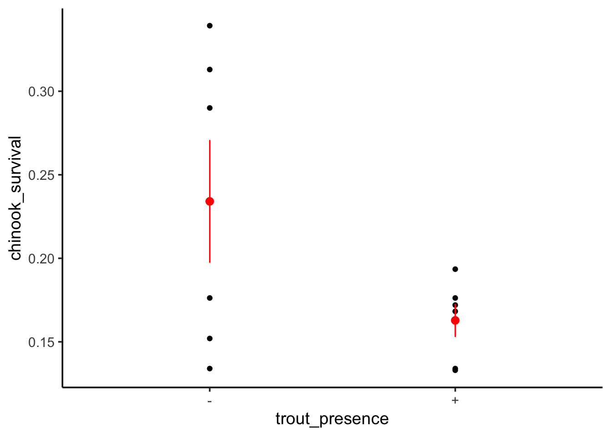
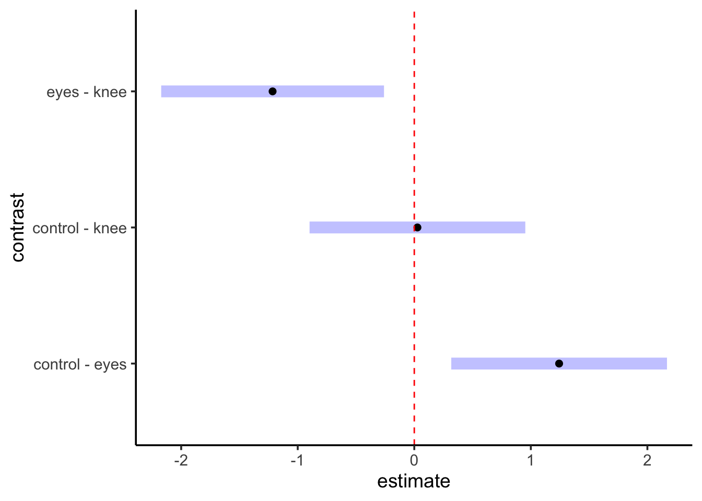

library(readr)
library(ggplot2)
library(dplyr)
theme_set(theme_classic(base_size = 14))
chinook <- read_csv("lab/data/05/12e4BrookTrout.csv") |>
rename(trout_presence = `brook trout?`,
chinook_survival = `Mean chinook survival`)
ggplot(data=chinook,
mapping=aes(x=trout_presence, y=chinook_survival)) +
geom_boxplot() Linear Models with Categorical Variables
1. Comparing Means
Comparing means are among the most frequently used tests in data analysis. Traditionally, they were done as a T-test, but, really, t-tests are just subsets of linear models. So, why not fit the appropriate linear model, and go from there! They’re delightfully simple, and provide a robust example of how to examine the entire workflow of a data analysis. These are steps you’ll take with any analysis you do in the future, no matter how complex the model!
For two means, we want to fit a model where our categorical variable is translated into 0s and 1s. That corresponds to the following model:
\[y_i = \beta_0 + \beta_1 x_i + \epsilon_i\]
Here, \(\beta_0\) corresponds to the mean for the group that is coded as 0 and \(\beta_1\) is the difference between the two groups. If \(\beta_1\) is different than 0, then the two groups are different, under a frequentist framework.
To see this, let’s look at a data set examining the survival of juvenile chinook salmon (yum) in rivers with (+) versus without (-) brook trout.
First, we’ll load and plot the data. We’ll also change the variable names, as that way we can not get tripped up with typing with spaces, etc.
OK, here we have two groups. We can fit a linear model with brook trout presensce as a predictor.
surv_mod <- lm(chinook_survival ~ trout_presence,
data = chinook)Before we go forward, what is this dummy coding that we’re talking about? We can look at the underlying set of predictors fit by the linear model using model.matrix()
model.matrix(surv_mod) (Intercept) trout_presence+
1 1 1
2 1 0
3 1 1
4 1 1
5 1 0
6 1 1
7 1 0
8 1 1
9 1 0
10 1 0
11 1 0
12 1 1
attr(,"assign")
[1] 0 1
attr(,"contrasts")
attr(,"contrasts")$trout_presence
[1] "contr.treatment"We can see that brook trout being present is coded as a 1 and absent is a 0. This is dummy coding.
1.1 Assumptions and Categorical Models
As we are fitting a linear model with a normal error structure, the tests are the same as usual. We can use performance to take a look.
library(performance)
check_model(surv_mod)
Looking at this, we can see a few things worth looking at.
check_predictions(surv_mod) |> plot()The match between the model and data is a bit wonky. This can at times be due to this being a categorical variable with a lot of residual variation, so, make sure broad patterns are reproduced. Still, worriesome to some extent.
What about linearity? Performance is giving somewhat wonky results, so we will use plot()
# weird result from performance
#check_model(surv_mod, check = "linearity") |> plot()
plot(surv_mod, which = 1)This - looks bad. One mean has a radically different residual structure than the other. We can see this further with the std. residuals for homogeneity of variance.
# weird result from performance
#check_model(surv_mod, check = "homogeneity") |> plot()
plot(surv_mod, which = 3)Woof. OK, let’s keep this in mind. Let’s look at the residuals directly
check_normality(surv_mod) |> plot(type = "qq")
This actually looks good. As does our check for outliers
check_outliers(surv_mod) |> plot(type = "bar")Nothing over the threshold.
1.2 Adjusting for HOV violation
We have a few approaches we can use here. We can transform
surv_mod_trans <- lm(asinh(chinook_survival) ~ trout_presence,
data = chinook)
plot(surv_mod_trans, which = 1)Nope.
We can rank transform, if we are comfortable with really changing the question
chinook <- mutate(chinook, rank_surv = rank(chinook_survival))
surv_mod_rank <- lm(rank_surv ~ trout_presence,
data = chinook)
plot(surv_mod_rank, which = 1)This works! But, remember, answers will have a different meaning in coefficients.
Last, we can model the variance with the nlme library using the glmmTMB library which has a nice interface for specifying error structure with the dispformula argument that works just like specifying y ~ x relationships (save that we don’t need to specify y - it’s the variance in this case).
library(glmmTMB)
surv_mod_var <- glmmTMB(chinook_survival ~ trout_presence,
dispformula = ~trout_presence,
data = chinook)We can compare the linear model and this model to see if it makes a difference. Note, we’ll need broom.mixed for glmmTMB objects.
library(broom)
library(broom.mixed)
tidy(surv_mod)# A tibble: 2 × 5
term estimate std.error statistic p.value
<chr> <dbl> <dbl> <dbl> <dbl>
1 (Intercept) 0.234 0.0269 8.70 0.00000563
2 trout_presence+ -0.0712 0.0381 -1.87 0.0907 tidy(surv_mod_var)# A tibble: 2 × 7
effect component term estimate std.error statistic p.value
<chr> <chr> <chr> <dbl> <dbl> <dbl> <dbl>
1 fixed cond (Intercept) 0.234 0.0335 6.98 3.00e-12
2 fixed cond trout_presence+ -0.0712 0.0347 -2.05 4.03e- 2Note that our SEs are somewhat wider. But, qualitatively, not a huge difference here, and it’s all about the SE.
1.3 Model Results
We can assess the model results in three different ways. First, the coefficients
tidy(surv_mod)# A tibble: 2 × 5
term estimate std.error statistic p.value
<chr> <dbl> <dbl> <dbl> <dbl>
1 (Intercept) 0.234 0.0269 8.70 0.00000563
2 trout_presence+ -0.0712 0.0381 -1.87 0.0907 We can see the - condition has a mean survival of 0.234 and including brook grout appears to decrease survival. But - what if we want to see the means? We can visualize this with the data.
ggplot(data=chinook,
mapping=aes(x=trout_presence, y=chinook_survival)) +
geom_point() +
stat_summary(fun.data = "mean_se", color = "red")
Useful! We can see the results in context here. We can also look at how much variability is associated with treatment.
# this is from performance
r2(surv_mod)# R2 for Linear Regression
R2: 0.259
adj. R2: 0.185The difference between the two is interesting - perhaps the addition of a parameter doesn’t increase fit very much?
Regardless, if we want to look at the actual estimated means and their difference, we need the emmeans package. It is a FABULOUS package for querying fit models, and we’ll use it hand in hand with modelr and others in the future as well as using it to explore models with many predictors - next week!
Let’s start by looking at those estimated means
library(emmeans)
surv_means <- emmeans(surv_mod, specs = ~trout_presence)
surv_means trout_presence emmean SE df lower.CL upper.CL
- 0.234 0.0269 10 0.174 0.294
+ 0.163 0.0269 10 0.103 0.223
Confidence level used: 0.95 OK! There we have our means and CIs. They match our earlier plot. We can then use the contrast function in emmeans to compare the two means to one another with the argument method = "pairwise".
surv_cont <- contrast(surv_means, method = "pairwise")
surv_cont contrast estimate SE df t.ratio p.value
(-) - (+) 0.0712 0.0381 10 1.872 0.0907ah HA - we see the difference between the two is estimated to be 0.07 with a SE of 0.38. Are they different? It depends on your inferential framework. Here, we are just looing at confidence intervals. Let’s say we wanted to see if the 89th CI (to pick one) overlaps 0, implying that possible values are 0 or are positive or negative.
confint(surv_cont, level = 0.89) contrast estimate SE df lower.CL upper.CL
(-) - (+) 0.0712 0.0381 10 0.00449 0.138
Confidence level used: 0.89 OK - all is positive! So we might well conclude there is decent evidence they are different. We’ll save a longer discussion for Ci choice later.
To see this on a plot of this, plot() produces a ggplot with the CI specified!
plot(surv_cont, level = 0.89) +
geom_vline(xintercept = 0, lty = 2, color = "red")We can compare this result to a classical t-test in R. Both assuming and relaxing the assumption of HOV.
t.test(chinook_survival ~ trout_presence,
data = chinook,
var.equal = TRUE,
conf.level = 0.89)
Two Sample t-test
data: chinook_survival by trout_presence
t = 1.8718, df = 10, p-value = 0.09074
alternative hypothesis: true difference in means between group - and group + is not equal to 0
89 percent confidence interval:
0.004490715 0.138009285
sample estimates:
mean in group - mean in group +
0.2340833 0.1628333 t.test(chinook_survival ~ trout_presence,
data = chinook,
var.equal = FALSE,
conf.level = 0.89)
Welch Two Sample t-test
data: chinook_survival by trout_presence
t = 1.8718, df = 5.7256, p-value = 0.1127
alternative hypothesis: true difference in means between group - and group + is not equal to 0
89 percent confidence interval:
-0.0006895684 0.1431895684
sample estimates:
mean in group - mean in group +
0.2340833 0.1628333 The results are slightly different in the CI - and notice here the choice of variance DOES matter for things like testing.
2. Many Levels
To see how this works with many categories, let’s look at the dataset 15e1KneesWhoSayNight.csv about an experiment to help resolve jetlag by having people shine lights at different parts of themselves to try and shift their internal clocks.
knees <- read_csv("lab/data/10/15e1KneesWhoSayNight.csv")We can see the outcomes with ggplot2
ggplot(knees, mapping=aes(x=treatment, y=shift)) +
stat_summary(color="red", size=1.3) +
geom_point(alpha=0.7) +
theme_bw(base_size=17)2.1 LM and Many Categories
As the underlying model of ANOVA is a linear one, we fit ANOVAs using lm() just as with linear regression.
knees_lm <- lm(shift ~ treatment, data=knees)Now, there are two things to notice here. One, note that treatment is a either a character or factor. If it is not, because we are using lm(), it will be fit like a linear regression. So, beware!
We can see how this was turned into dummy coding with model.matrix()
model.matrix(knees_lm) (Intercept) treatmenteyes treatmentknee
1 1 0 0
2 1 0 0
3 1 0 0
4 1 0 0
5 1 0 0
6 1 0 0
7 1 0 0
8 1 0 0
9 1 0 1
10 1 0 1
11 1 0 1
12 1 0 1
13 1 0 1
14 1 0 1
15 1 0 1
16 1 1 0
17 1 1 0
18 1 1 0
19 1 1 0
20 1 1 0
21 1 1 0
22 1 1 0
attr(,"assign")
[1] 0 1 1
attr(,"contrasts")
attr(,"contrasts")$treatment
[1] "contr.treatment"Note that now we have an intercept and two 0/1 variables!
2.2 Assumption Evaluation
Because this is an lm, we can check our assumptions as before - with one new one. First, some oldies but goodies.
check_model(knees_lm)Looks good! You can of course dig into individual plots and assumptions as above, bot, broadly, this seems good.
2.3 Evaluating Model Results
So, there are a lot of things we can do with a fit model
2.3.1 Summary Output
summary(knees_lm)
Call:
lm(formula = shift ~ treatment, data = knees)
Residuals:
Min 1Q Median 3Q Max
-1.27857 -0.36125 0.03857 0.61147 1.06571
Coefficients:
Estimate Std. Error t value Pr(>|t|)
(Intercept) -0.30875 0.24888 -1.241 0.22988
treatmenteyes -1.24268 0.36433 -3.411 0.00293 **
treatmentknee -0.02696 0.36433 -0.074 0.94178
---
Signif. codes: 0 '***' 0.001 '**' 0.01 '*' 0.05 '.' 0.1 ' ' 1
Residual standard error: 0.7039 on 19 degrees of freedom
Multiple R-squared: 0.4342, Adjusted R-squared: 0.3746
F-statistic: 7.289 on 2 and 19 DF, p-value: 0.004472First, notice that we get the same information as a linear regression - including \(R^2\) This is great, and we can see about 43% of the variation in the data is associated with the treatments. We also get coefficients, but, what do they mean?
Well, they are the treatment contrasts. Not super useful. R fits a model where treatment 1 is the intercept, and then we look at deviations from that initial treatment as your other coefficients. It’s efficient, but, hard to make sense of. To not get an intercept term, you can refit the model without the intercept. You can fit a whole new model with -1 in the model formulation.
knees_lm_no_int <- update(knees_lm, formula = . ~ . -1)
summary(knees_lm_no_int)
Call:
lm(formula = shift ~ treatment - 1, data = knees)
Residuals:
Min 1Q Median 3Q Max
-1.27857 -0.36125 0.03857 0.61147 1.06571
Coefficients:
Estimate Std. Error t value Pr(>|t|)
treatmentcontrol -0.3087 0.2489 -1.241 0.230
treatmenteyes -1.5514 0.2661 -5.831 1.29e-05 ***
treatmentknee -0.3357 0.2661 -1.262 0.222
---
Signif. codes: 0 '***' 0.001 '**' 0.01 '*' 0.05 '.' 0.1 ' ' 1
Residual standard error: 0.7039 on 19 degrees of freedom
Multiple R-squared: 0.6615, Adjusted R-squared: 0.6081
F-statistic: 12.38 on 3 and 19 DF, p-value: 0.0001021OK - that makes more sense. But, ugh, who wants to remember that. Instead, we can see treatment means using the emmeans package yet again.
emmeans(knees_lm, ~treatment) treatment emmean SE df lower.CL upper.CL
control -0.309 0.249 19 -0.830 0.212
eyes -1.551 0.266 19 -2.108 -0.995
knee -0.336 0.266 19 -0.893 0.221
Confidence level used: 0.95 I also like this because it outputs CIs.
2.3.2 Model Visualization
The plot from above really sums this work up.
ggplot(knees, mapping=aes(x=treatment, y=shift)) +
stat_summary(fun.data = "mean_se", color="red") +
geom_point(alpha=0.7)This is great! But I’d argue, there are some more fun and interesting ways to look at this. The ggdist package and ggridges can create some interesting visualizations with additional information.
For example, from ggridges
library(ggridges)
ggplot(data = knees,
mapping = aes(x = shift, y = treatment)) +
stat_density_ridges()This might be too vague - or it might be great in terms of seeing overlap. ggdist combined a few different elements. I’m a big fan of geom_halfeye as you get a density and mean and CI.
library(ggdist)
ggplot(data = knees,
mapping = aes(y = treatment, x = shift,
fill = treatment)) +
stat_halfeye()
These densities are more based on the data, and a lot of this provides a clearer cleaner visualization. There are a lot of other interesting elements of ggdist that are worth exploring
ggplot(data = knees,
mapping = aes(y = treatment, x = shift,
fill = treatment)) +
stat_dist_dotsinterval()But, as an exercise why not visit the ggdist webpage and try and come up with the most interesting visualization of the knees project that you can!
2.3.2 A Priori Planned Contrasts
If you have a priori contrasts, you can use the constrat library to test them. You give contrast an a list and a b list. Then we get all comparisons of a v. b, in order. It’s not great syntactically, but, it lets you do some pretty creative things.
contrast::contrast(knees_lm,
a = list(treatment = "control"),
b = list(treatment = "eyes"))lm model parameter contrast
Contrast S.E. Lower Upper t df Pr(>|t|)
1 1.242679 0.3643283 0.4801306 2.005227 3.41 19 0.00292.3.3 Unplanned pairwise comparisons
Meh. 9 times out of 10 we want to do compare all possible levels of a categorical variable and look at which differences have cofidence intervals that contain 0. We can use our emmeans object here along with the contrast() function and confint(). Note, by default, confidence intervals will be adjusted using the Tukey method of adjustment.
knees_em <- emmeans(knees_lm, specs = ~treatment)
contrast(knees_em,
method = "pairwise") |>
confint() contrast estimate SE df lower.CL upper.CL
control - eyes 1.243 0.364 19 0.317 2.168
control - knee 0.027 0.364 19 -0.899 0.953
eyes - knee -1.216 0.376 19 -2.172 -0.260
Confidence level used: 0.95
Conf-level adjustment: tukey method for comparing a family of 3 estimates We don’t need to worry about many of the fancier things that emmeans does for the moment - those will become more useful with other models. But, we can look at this test a few different ways. First, we can visualize it
contrast(knees_em,
method = "pairwise") |>
plot() +
geom_vline(xintercept = 0, color = "red", lty=2)
We can also, using our tukey method of adjustment, get “groups” - i.e., see which groups are statistically the same versus different.
library(multcomp)
cld(knees_em, adjust="tukey") treatment emmean SE df lower.CL upper.CL .group
eyes -1.551 0.266 19 -2.25 -0.855 1
knee -0.336 0.266 19 -1.03 0.361 2
control -0.309 0.249 19 -0.96 0.343 2
Confidence level used: 0.95
Conf-level adjustment: sidak method for 3 estimates
P value adjustment: tukey method for comparing a family of 3 estimates
significance level used: alpha = 0.05
NOTE: If two or more means share the same grouping letter,
then we cannot show them to be different.
But we also did not show them to be the same. This can be very useful in plotting. For example, we can use that output as a data frame for a ggplot in a few different ways.
cld(knees_em, adjust="tukey") %>%
ggplot(aes(x = treatment, y = emmean,
ymin = lower.CL, ymax = upper.CL,
color = factor(.group))) +
geom_pointrange() cld(knees_em, adjust="tukey") %>%
mutate(.group = letters[as.numeric(.group)]) %>%
ggplot(aes(x = treatment, y = emmean,
ymin = lower.CL, ymax = upper.CL)) +
geom_pointrange() +
geom_text(mapping = aes(label = .group), y = rep(1, 3)) +
ylim(c(-2.5, 2))knees_expanded <- left_join(knees, cld(knees_em, adjust="tukey"))
ggplot(knees_expanded,
aes(x = treatment, y = shift, color = .group)) +
geom_point()Comparing to a Control
We can similarly use this to look at a Dunnett’s test, which compares against the control
contrast(knees_em,
method = "dunnett") |>
confint() contrast estimate SE df lower.CL upper.CL
eyes - control -1.243 0.364 19 -2.118 -0.367
knee - control -0.027 0.364 19 -0.903 0.849
Confidence level used: 0.95
Conf-level adjustment: dunnettx method for 2 estimates Note, if the “control” had not been the first treatment, you can either re-order the factor using forcats or just specify which of the levels is the control. For example, eyes is the second treatment. Let’s make it our new reference.
contrast(knees_em,
method = "dunnett", ref=2) |>
confint() contrast estimate SE df lower.CL upper.CL
control - eyes 1.24 0.364 19 0.367 2.12
knee - eyes 1.22 0.376 19 0.311 2.12
Confidence level used: 0.95
Conf-level adjustment: dunnettx method for 2 estimates You can even plot these results
plot(contrast(knees_em,
method = "dunnett", ref=2)) +
geom_vline(xintercept = 0, color = "red", lty=2)Bonferonni versus No Correction
Let’s say you wanted to do all pairwise tests, but, compare using a Bonferroni correction or FDR. Or none! No problem! There’s an adjust argument
contrast(knees_em,
method = "pairwise") |>
confint(adjust="bonferroni") contrast estimate SE df lower.CL upper.CL
control - eyes 1.243 0.364 19 0.286 2.199
control - knee 0.027 0.364 19 -0.929 0.983
eyes - knee -1.216 0.376 19 -2.203 -0.228
Confidence level used: 0.95
Conf-level adjustment: bonferroni method for 3 estimates contrast(knees_em,
method = "pairwise") |>
confint(adjust="none") contrast estimate SE df lower.CL upper.CL
control - eyes 1.243 0.364 19 0.480 2.005
control - knee 0.027 0.364 19 -0.736 0.790
eyes - knee -1.216 0.376 19 -2.003 -0.428
Confidence level used: 0.95 2.4 Faded Examples
Let’s try three ANOVAs! First - do landscape characteristics affect the number of generations plant species can exist before local extinction?
plants <- read.csv("lab/data/10/15q01PlantPopulationPersistence.csv")
#Visualize
ggplot(plants,
aes(x = treatment, y = generations)) +
geom_boxplot()
#fit
plant_lm <- lm(generations ~ treatment, data=plants)
#assumptions
check_model(plant_lm)
#evaluate
tidy(plant_lm)
r2(plant_lm)
#contrasts
contrast(emmeans(plant_lm, ~treatment),
method = "pairwise") |>
confint()Second, how do different host types affect nematode longevity?
worms <- read.csv("./data/10/15q19NematodeLifespan.csv")
#Visualize
ggplot(data = _______,
mapping = aes(x = treatment, y = lifespan)) +
geom_____________() #feel free to play
#fit
worm_lm <- lm(______ ~ ______, data=worms)
#assumptions
check_model(__________)
#evaluate
tidy(________)
r2(________)
#contrasts
contrast(emmeans(______, ~________),
method = "pairwise") |>
confint()And last, how about how number of genotypes affect eelgrass productivity. Note, THERE IS A TRAP HERE. Look at your dataset before you do ANYTHING.
eelgrass <- read.csv("labs/data/10/15q05EelgrassGenotypes.csv")
#DO SOMETHING HERE
#Visualize
________(data = _________,
mapping = aes(x = treatment.genotypes, y = shoots)) +
___________
#fit
eelgrass_lm <- __(______ ~ ______, data=________)
#assumptions
________(______)
#ANOVA
________(______)
#contrasts
contrast(emmeans(_________, ~_________),
method = "_________") |>
_________()